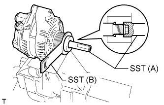

ГЕНЕРАТОР > ПОВТОРНАЯ СБОРКА |
| 1. УСТАНОВИТЕ ПОДШИПНИК РАМЫ ГЕНЕРАТОРА СО СТОРОНЫ ПРИВОДА |
С помощью SST и пресса запрессуйте новый подшипник.
Совместите захваты сепаратора подшипника с канавками внутри рамы генератора со стороны привода.
| *1 | Захват |
Закрепите держатель подшипника 4 винтами.
| 2. УСТАНОВИТЕ РОТОР ГЕНЕРАТОРА В СБОРЕ |
Установите ротор и шайбу на раму со стороны привода.
| 3. УСТАНОВИТЕ КАТУШКУ ГЕНЕРАТОРА В СБОРЕ |
С помощью удлиненной торцевой головки (21 мм) и пресса медленно запрессуйте катушку генератора.
| *1 | Удлиненная торцевая головка (21 мм) |
 |
Закрепите катушку генератора 4 стяжными болтами.
| 4. УСТАНОВИТЕ ЩЕТКОДЕРЖАТЕЛЬ ГЕНЕРАТОРА В СБОРЕ |
Вдавив 2 щетки в щеткодержатель генератора, вставьте штифт с диаметром 1,0 мм (0,0394 дюйма) в отверстие щеткодержателя.
| *1 | Штифт |
Закрепить щеткодержатель 2 болтами.
Вытяните штифт из щеткодержателя.
| *1 | Штифт |
| 5. УСТАНОВИТЕ ИЗОЛЯТОР КОНТАКТА |
| 6. УСТАНОВИТЕ ЗАДНЮЮ ТОРЦЕВУЮ КРЫШКУ ГЕНЕРАТОРА |
Установите заднюю торцевую крышку генератора и закрепите ее 3 гайками.
| 7. УСТАНОВИТЕ ШКИВ ГЕНЕРАТОРА С МУФТОЙ |
Вручную установите шкив.
Закрепите генератор в тисках между алюминиевыми пластинами.
|  |
Установите на шкив генератора с муфтой SST (A) и (B), как показано на рисунке.
| *1 | Длина рычага |
| *a | Удерживайте |
 | Поверните |
Снимите SST с генератора.
Убедитесь, что шкив генератора вращается плавно.
Установите новую крышку шкива генератора.